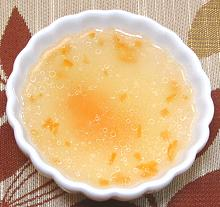

 |
Lemon Wine Sauce for FishCalifornia | ||||
| Makes: Effort: Sched: DoAhead: |
5 oz * 10 min Yes |
This is my favorite sauce for fish, because it doesn't at all mask the taste of the fish. I paid for fish, so that's what I want to taste. Its actually more a dip than a sauce, but I spoon it over the fish. | |||
| This sauce is quite lemony as given, but you can balance to your taste by changing the ratio of wine to lemon juice. You could also use black pepper instead of the chili. The photo example is made with Scotch Bonnet chili. If your fish is an oily one, you can skip the butter, but if it is one with a dry mouth feel, you can increase the butter. | |||||
|
|
1/4 1/3 2 ar ar |
c c t |
Lemon White Wine (1) Butter, salted Chili, fresh (2) Fresh Herbs (opt) |
Almost every fish on our Fish Page (very large page) was tested with this sauce. I do not include salt, because there's usually enough mixed with the rice flour I dust the fish with for frying, or in the poaching water. Various finely chopped herbs also work very well with this sauce. I always spoon this sauce over the fish on my plate. Then, when breaking up the fish, I tumble pieces in the sauce surrounding it. I always eat fish with chopsticks because they give me precise control over how I break it up.
|